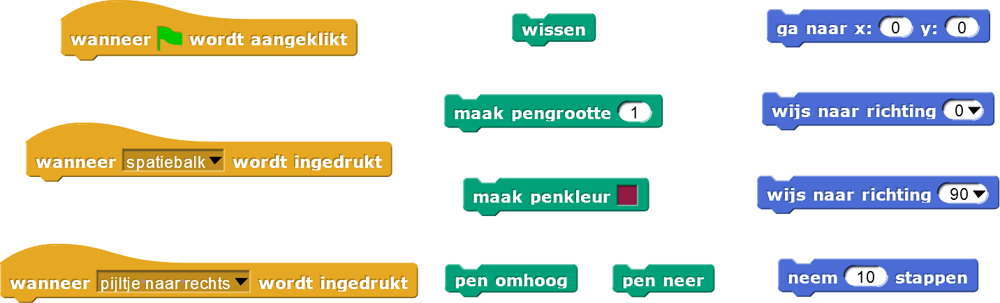
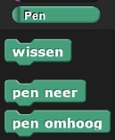

Lijntekeningen van sprites
In dit project, ga je het beroemde kinderspeelgoed Etch A
Sketch ® simuleren.

- Klik op het interactieve lijntekeningprogramma om ermee te spelen.
Gebruik de pijltjestoetsen en de spatiebalk om te zien wat ze doen.
Hier zijn wat blokken die misschien handig zijn voor de volgende opdrachten.

Om te blokken te vinden die je nodig zal hebben, kan je kijken naar ade kleur van het blok. De groene blokken
vind je bijvoorbeeld in het groene Pen-menu.

-
Hier zijn een paar dingen die je kan doen aan het begin van je programma
wanneer groene vlag
wordt aangeklikt :
- Verwijder alle vorige tekeningen
- Plaats de teken-sprite in het midden van het scherm
- Wijs naar boven
- Maak de pen waarmee getekend wordt een bepaalde kleur en grootte
- Zet de pen neer om te tekenen
- Schrijf code die de tekeningen verwijderd
als de spatiebalk ingedrukt wordt door de
gebruiker.
-
Nu ben je klaar om code te schrijven voor wat er moet gebeuren als de pijltjestoetsen ingedrukt worden.
Dit is wat er moet gebeuren
als de rechter pijltjestoets ingedrukt wordt door de
gebruiker.
- Wijs naar rechts
- Beweeg een bepaald aantal stappen, bijvoorbeeld 10, in die richting
- Schrijf nu code voor de andere pijltjestoetsen.
Dit is hoe Snap
! hoeken als richtingen ziet:
- 0° is omhoog
- 90° is naar rechts
- 180° is omlaag
- -90° (of 270°) is naar links
Positieve hoeken gaan met de klok mee vanaf 0°, omhoog en negatieve hoeken gaan tegen de klok in vanaf
0°.

-
Op dit moment tekent het programma door ook al houdt het scherm op. Pas je code aan zodat er alleen
getekend wordt als de teken-sprite binnen het scherm is: -240 tot 240 in the x-richting (horizontaal) en
-180 tot 180 in the y-richting (verticaal). Je kan een blok zoals hieronder maken om de bewegingsruimte
van een sprite te beperken.

-
Geef de gebruiker een aantal mogelijkheden voor verschillende kleuren. Als de "1"-toets bijvoorbeeld
wordt ingedrukt, wordt de penkleur zwart en als de "2"-toets wordt ingedrukt wordt ie rood. Je kan
wellicht ook zorgen dat als een bepaalde toets wordt ingedrukt, het
pen omhoog- of
pen neer-blok wordt ingedrukt.
- Geef de gebruiker de mogelijkheid om diagonale lijnen te tekenen. Schrijf code om de sprite
bijvoorbeeld te bewegen met een hoek van 45°, 135°, 225° of 315°, met behulp van de
"w"-, "s"-, "a"- en "q"-toetsen.
- Maak nu een prachtig kunstwerk met je tekenprogramma. Maak een screenshot van je werk en maak een soort
kunstgallerij met de hele klas. Je kan ze wellicht online zetten zodat ander klassen of scholen het ook
kunnen zien.